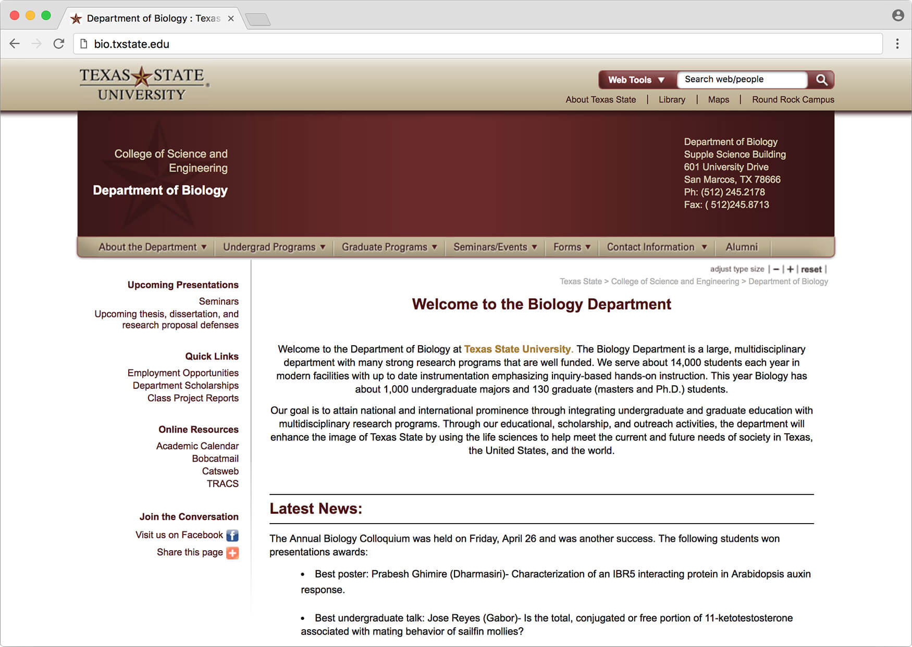
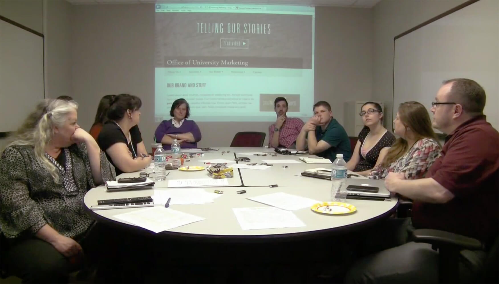
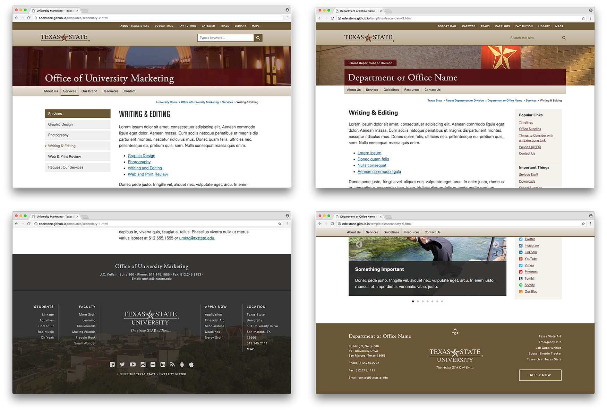
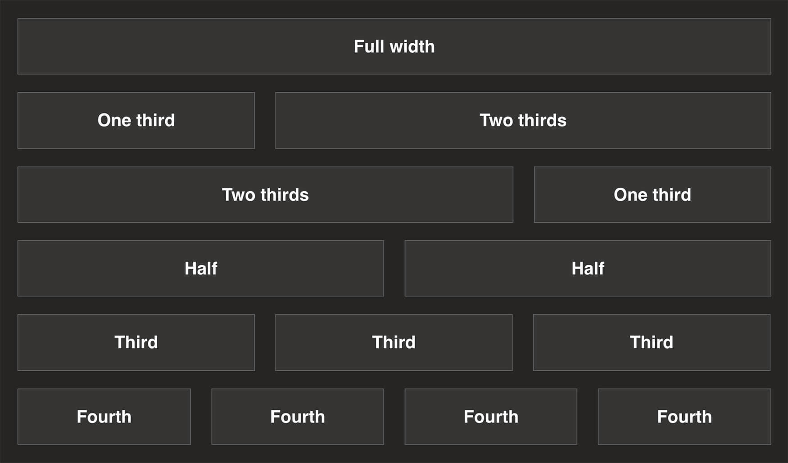
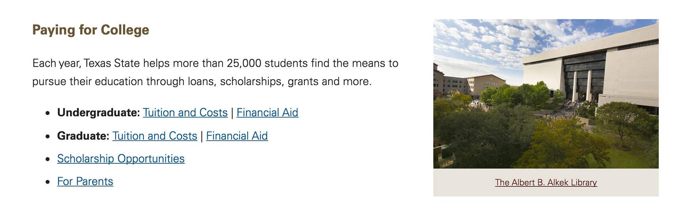
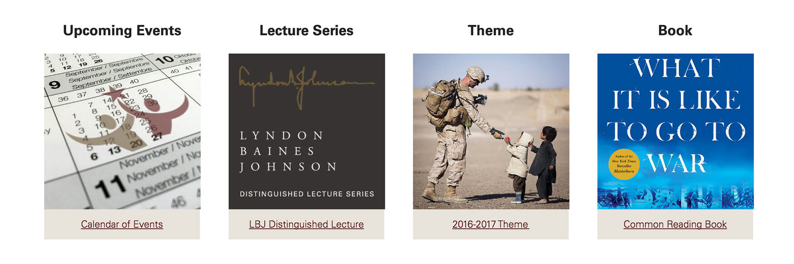
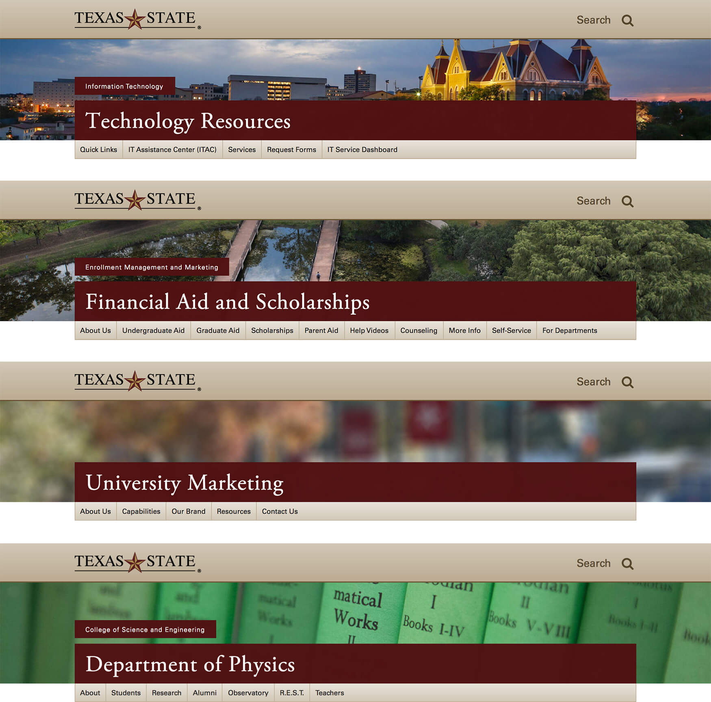
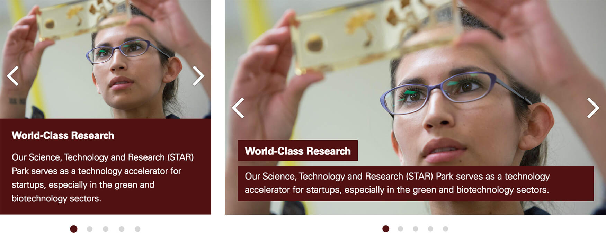

Growing an ecosystem
Pretty much every unit at Texas State – from the president, to human resources, to academic areas and major research initiatives – uses the CMS template, brand elements, and content types I designed iteratively during 2015-2016.
Context
In the mid-2000s nearly every Texas State unit converted to the Magnolia CMS, known locally as Gato. A small team of web generalists deployed and managed a template, content editors got simpler build tools, security pros got safer forms and data. Everybody was happy ... for a little while. Rapid enrollment growth soon diverted resources from the CMS, technology changed rapidly, and institutional knowledge left with key staff.
Like the Texas State homepage, the primary template had not been addressed since 2009. It lacked web typography, colors, and multi-column layouts, and editors struggled to find compelling ways to convey information. Many units were looking for ways out of the CMS, or were hacking in overrides that were unmaintainable, inconsistent, and non-accessible. Not good.

The standard template in November 2014 (as utilized by University Marketing)
Goals
In early 2015 a small, cross-departmental team was formed to explore major changes. In addition to updating the template, we aimed to create a design culture that valued the web as our strongest marketing and informational asset. There were many overlapping goals, but here are some of the bigger ones:
- Create a multi-column, responsive, and accessible template wrapper
- Modernize brand elements in a systematic fashion
- Add key graphical content types
- Spread centralized photos and web publishing strategies across campus
- Build user feedback loops and systems that encourage continued iterative development
Process
Past digital projects at Texas State were mostly traditional: a designer built Photoshop mockups and tossed them over to a developer for slicing. This time around, the complexities of responsive websites would bring the design side deeper into the front end – from owning hover effects and transition times, to leading decisions on breakpoints, CSS, and performance. Our lead developer and I discuss this transition on a recent episode of the RWD Podcast.
Focus groups
Texas State has 400+ websites and nearly 1000 decentralized editors, so there's a lot of variation. To get a firm grasp on unit needs, and what editors expected from an updated CMS template, I led a bunch of focus groups in March 2015. I presented several inspirational higher education sites, as well as some preliminary mockups I built to solicit feedback on visual design and front-end behavior.

Focus group participants give feedback on preliminary designs
Initial concept
Long before the idea to update the CMS template, I worked on a side project focusing on a new look and feel for the University Marketing website. The intention was not to scale to the entire campus, but rather to demonstrate concepts like accessible color, web fonts, responsive design, and background video to departmental leadership. I went straight to high fidelity for these demos.
After lots of good feedback, and reaching an institutional consensus on updating our web properties, I naturally built upon these initial designs.

Iterative prototypes
I expanded on the initial concept in a series of HTML/CSS prototypes from March to July 2015. Overall, we went through about half a dozen major design iterations before starting back-end development. To facilitate communication with stakeholders, developers, and focus group participants (who offered regular feedback on my progress), I organized the project on GitHub Pages.

Various header, sidebar, and footer prototypes
Major improvements over previous design
- Responsive design
- Graphical components added – slider, image banners, buttons, icons
- User friendly multi-column layouts
- Strategic brand identity
- Photo libraries deployed for content creators
- HTML/CSS color and text solutions
Noteworthy features
Columns
Our most-requested feature was the ability to make multi-column layouts without any coding knowledge. To keep things simple for users, I selected a basic grid system (inspired by Adam Kaplan's Grid) for my prototypes that we later carried into the final CMS implementation. Magnolia didn't have this capability baked in, so our developers built it from scratch like the absolute bosses they are.

The primary template grid
2-column layout for Admissions and Aid
Special project utilizing a 4-column layout
Images
Texas State is known as “the most beautiful campus in Texas” and we wanted our websites to reflect that. So we incorporated background images into the header design, and added key components like a customizable slider, buttons, and iconography. To support the image needs these additions generated, our photographer and I curated a library of unmistakable Texas State banners and several other image galleries highlighting campus life.

A few headers utilizing our library of over 200 banner images
Mobile and desktop views of the slider component
Examples
We released the new template to users in January 2016.
In addition to designing for it, I was also a primary user of the CMS, managing the content for University Marketing, the president's office, and the Texas State style guide. I'm also fond of these implementations from my peers:
Is it perfect?
Hahaha, no. It was a gigantic project, and while we certainly nailed it based on available resources, I would make some changes if I could:
- Too many button options: While our buttons are beautiful and thoughtful, we gave users too many choices, leading to over-reliance for layout purposes (instead of calls to action), lots of mixing-and-matching, and a lack of unity.
- No pre-filled page templates: Users are confronted with a blank page every time they start a new webpage in the CMS. This proved intimidating for many, but unfortunately it wasn't an issue we could easily address.
- Vertical rhythm is not optimal: It's hard getting the padding and margin correct on elements when you don't know exactly how users will stack them. I really wish I had more time for this.